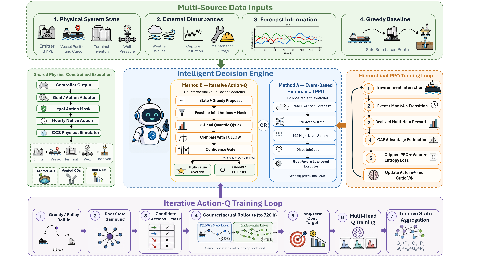
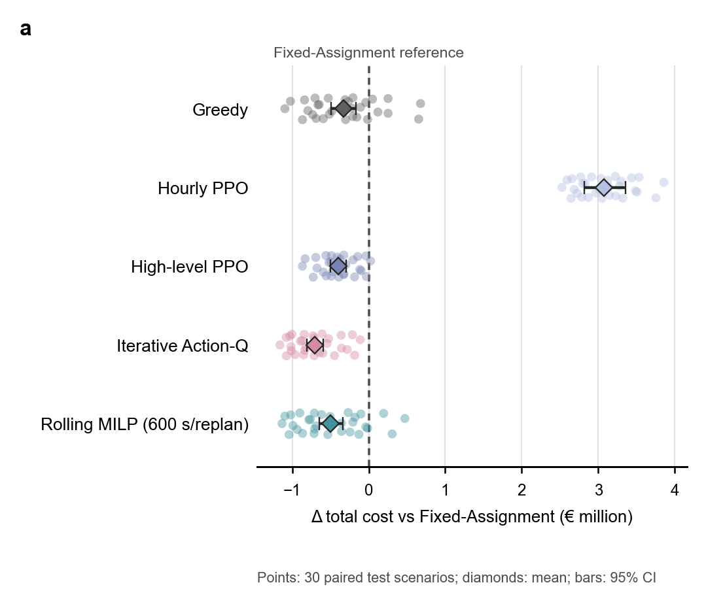
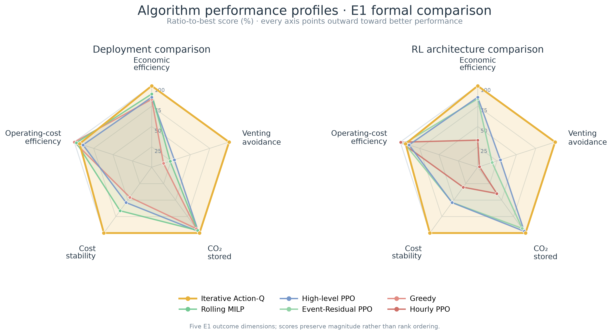
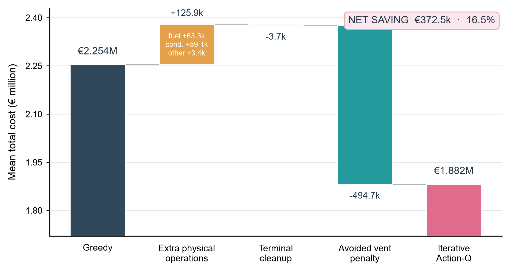
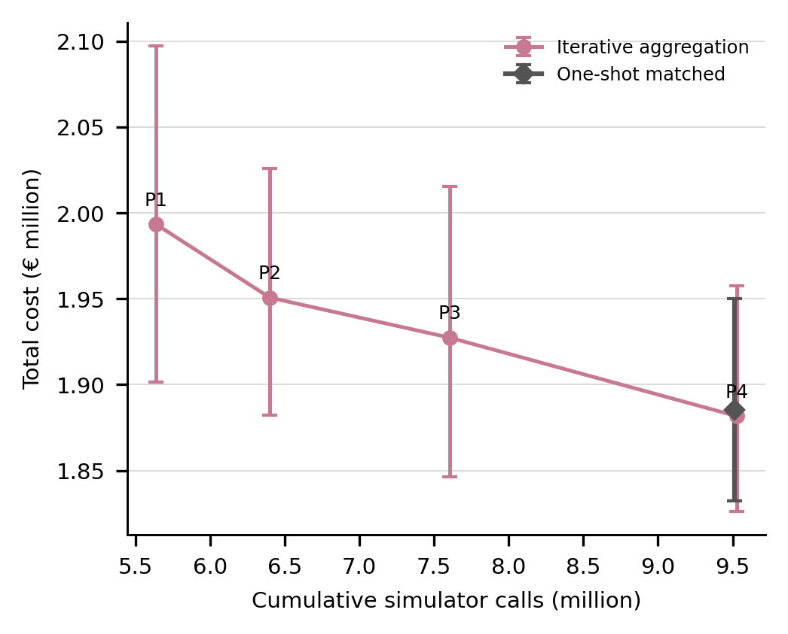
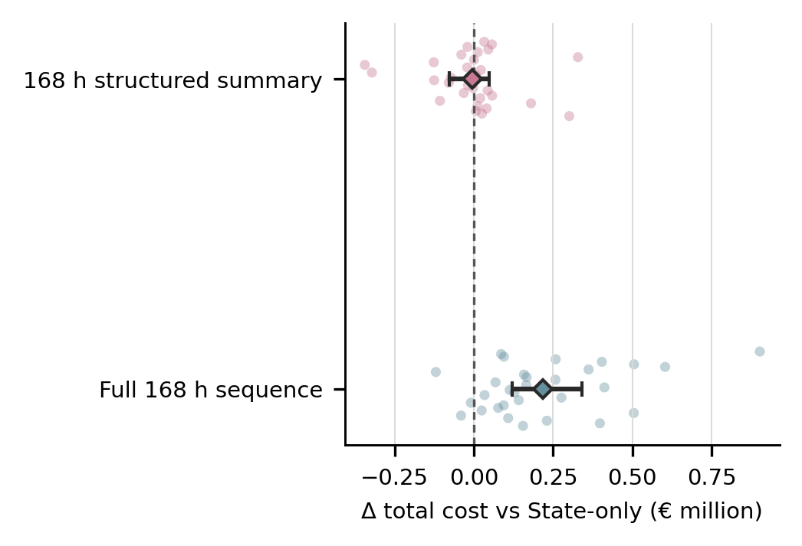
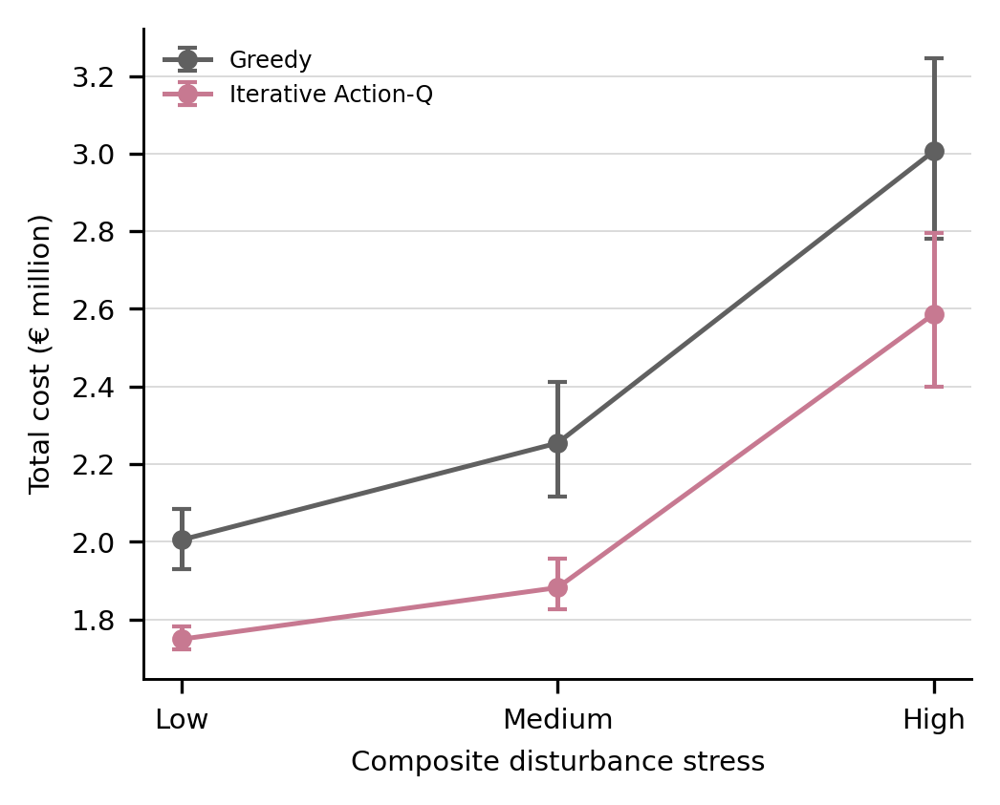
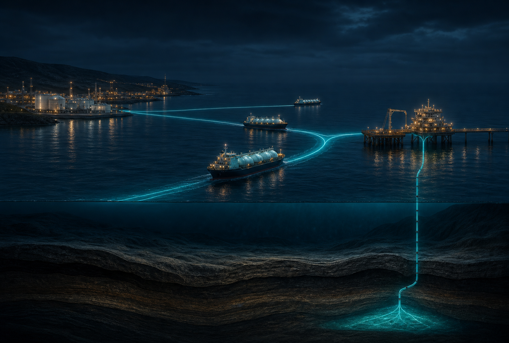

€372.5kmean saving below Greedy
Research software · 2026
Intelligent dispatch
for ship-based CCS.
A physics-constrained simulator for comparing heuristics, rolling optimisation and learned controllers across the same maritime CO₂ chain.
One simulator. One frozen protocol. Shared physical truth.
720 h operational horizon
Mean cost
€1.882M
Venting vs Greedy
−84.7%
84.7%less vented CO₂
110.2 ktmean CO₂ stored
0hard physical violations
The physical chain
Every decision settles in the same physics.
Controllers can propose routes and actions. They cannot change mass balance, storage limits, pressure equations or legal-action rules.
Capture
Variable sources fill finite emitter buffers.
Transport
Three vessels load, sail, queue and unload.
Terminal
Onshore inventory connects fleet and pipeline.
Storage
Injection availability and pressure bound storage.
Auditable execution
Hourly settlement exposes inventory, flow, cost, venting and pressure diagnostics.
Comparable policies
Fixed assignment, Greedy, PPO variants, Action-Q and MILP share one action interface.
Artifact-backed results
Protocols, seeds, source data, figures and aggregate tables are included for E0–E5.
Iterative Action-Q
Learn the few interventions that matter.
Greedy remains the safe default. Candidate joint actions are evaluated with counterfactual rollouts to the end of the 720-hour episode, then a confidence and economic-margin gate decides whether to override.
G0
Collect Greedy states
Safe operational roots
P1–P4
Counterfactual rollouts
Matched to episode end
Q
Multi-head value model
Feasible joint actions only
Gate
Override or FOLLOW
Agreement + economic gain

Experimental evidence
Improvement measured from multiple angles.
E0 validates the simulator. E1 compares seven controllers. E2–E4 test iteration, future information and disturbance robustness.
E1 · Seven-controller comparison
Lower cost without trading away physical validity.
Across 30 paired scenarios, Iterative Action-Q reaches €1.882M mean total cost and stores 7.1% more CO₂ than Greedy.
- 16.5% lower mean total cost
- 23.5% lower unit total cost
- 83 / 90 wins across model-seed/scenario pairs

E1
Algorithm profile
Normalized multi-metric comparison

E1
Cost improvement
Greedy → Action-Q

E2
Iteration ablation
P1 through P4

E3
Future information
Compact beats excessive detail

E4
Disturbance robustness
Low, medium and high stress

Evaluation results are reproducible and fully reported. The E1 model-adoption caveat is preserved in the provenance record.
Live operations replay
Follow every vessel, buffer and tonne of CO₂.
Scrub through a representative 720-hour trajectory. Select any physical component to link its map state, live status and history chart.

Open and reproducible
From physical validation to controller comparison.
Reproduce the simulator locally, launch the end-to-end Colab training tutorial or inspect the frozen evaluation protocols and source tables.
Run the simulator
git clone https://github.com/ZZZPhaethon/CCS_RL.git
cd CCS_RL
uv sync
uv run python examples/run_physical_layer_demo.pyExplore the artifacts
Start in the browser
Generate counterfactual data, train and validate Iterative Action-Q, then replay the learned controller in the V2 cinematic dashboard.
Open in ColabCitation
CCS_RL research software
If this repository supports your research, please cite the software.
@software{ccs_rl_2026,
title = {CCS_RL: Physics-Constrained Simulation and Learned
Dispatch Control for Ship-Based Carbon Capture
and Storage Chains},
author = {CCS_RL contributors},
year = {2026},
url = {https://github.com/ZZZPhaethon/CCS_RL}
}